can't be wished for

| Potion of ... | UnID'D name | Weight | Effect when drunk | Remarks | Tile |
|---|---|---|---|---|---|
| balance | gray | 4s | adjusts attributes toward the attributes' average [1] XOR draw alignment towards N= | chance for modifying attributes is 100-((AttributeAverage-10)*4)%: 100% for 10 or less, 0% for 35 or more; see also 0.6.2.2 |
|
| beauty | silvery | 4s | +Ap | [7] |
|
| berzio | brown | 2s | food (can be drunk even when bloated: +20d10/+10d10/-10d10 satiation B/U/C) | pacifies animals when thrown – a very brief effect; always "brown potion" |
|
| blindness | amber | 2s | blinds (10d10/20d10 turns U/C); blessed cures blindness | blinds monsters when thrown |
|
| boost appearance | blubbery | 2s | +Ap (temporary) | [7] |
|
| boost charisma | light blue | 2s | +Ch (temporary) | [7] | |
| boost dexterity | light red | 2s | +Dx (temporary) | [7] |
|
| boost learning | mercury | 2s | +Le (temporary) | [7] |
|
| boost mana | rusty | 2s | +Ma (temporary) | recharges wands 3d3/2d3/1d3 B/U/C [7] |
|
| boost perception | bright | 2s | +Pe (temporary) | [7] |
|
| boost speed | thin | 2s | +1d30+19/1d20+9/1d10 temporary speed B/U/C | no permanent speed increase |
|
| boost strength | light green | 2s | +St (temporary) | [7] |
|
| boost toughness | turquoise | 2s | +To (temporary) | [7] | |
| boost willpower | light cyan | 2s | +Wi (temporary) | [7] |
|
| booze | black | 4s | drunks (temporary) [2] | recharges wands 2d2/1d3/1d2 B/U/C; Yggaz trades random potions for potions of booze | 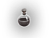 |
| carrot juice | orange | 4s | +1 Pe limit 20 | +5 Pe when drunk in a room that smells like carrots; Blup will teach Swimming when given enough potions of carrot juice; always "orange potion" [7] |
|
| charisma | murky | 4s | +Ch | [7] |
|
| confusion | green | 2s | confuses (temporary); blessed cures confusion | confuses monsters when thrown |
|
| cure corruption | mottled | 2s | removes corruptions 50d30/50d10/-50d5 B/U/C (about 0.75 corruptions if blessed); see 0.10.3.1 | damages 24d24+24/16d16+16/8d8+8 B/U/C creatures that corrupt by touch when thrown (ignores PV); quest object for Gaab'Baay | |
| cure poison | cyan | 2s | cures poisoning | stuns monsters with poison attacks when thrown | 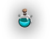 |
| deafness | red | 2s | deafens (1d1000/10d1000 turns U/C); blessed cures deafness |
| |
| dexterity | muddy | 4s | +Dx | [7] |
|
| education | dull | 2s | trains an existing skill or grants a new one, 6d5/4d5/2d5 points B/U/C | 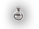 | |
| exchange | golden | 4s | exchanges attributes; see 0.6.2.1 | dipped items are exchanged if the potion is blessed; throw to exchange monsters – no uniques, exchange if 1d(Dx)-1 + 1dlvl-1 + 10 > MonsterLevel; see 0.14.5 | 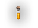 |
| extra healing | blue | 2s | restores HP (max 333 HP if blessed), cures sickness (100% chance only if blessed) | blessed potion will permanently increase max HP 1-2 points when drunk |
|
| gain attributes | glowing | 4s | +1 to one (uncursed) or all (blessed) attributes; cursed: -1 to random attribute | [7] | 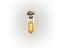 |
| healing | swirly | 4s | restores a few HP, cures sickness (100% chance only if blessed) | blessed potion has a ~35% chance to permanently increase max HP by 1 when drunk |
|
| insight | magenta | 2s | reveals your intrinsic resistances and regeneration rates | ||
| invisibility | clear | 4s | makes invisible (temporary), cursed blinds PC | cursed blinds enemies when thrown | 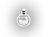 |
| learning | misty | 4s | +Le | [7] |
|
| longevity | purple | 4s | increases MaxAge by fixed amount (4d8 years if blessed) – reverses effects of eating quickling royalty | ||
| mana | blazing | 4s | +Ma | recharges wands 3d4/2d4/1d4 B/U/C [7] |
|
| oil | slimy | 2s | poisons if not blessed | rustproofs metal and waterproofs other items (may fail, chance is about 1%/50%/99% B/U/C 99%/50%/1%), but does not remove rust [6]; Use to disarm alarm traps |
|
| oil of rust removal | white | 2s | poisons for 3 damage, 3 frequency | rusts dipped iron items if cursed, removes rust from rusty items if uncursed, rustproofs unrusty iron items (waterproofs other items) if blessed; always "white potion" [4] | 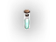 |
| poison | oily | 4s | poisons if not blessed | poisons dipped weapons/missiles/food; poisons monsters when thrown for 1d3 damage, 1d8 frequency – no undead or constructs |
|
| potential beauty | clotted | 4s | +Ap potential maximum | [7] |
|
| potential charisma | translucent | 4s | +Ch potential maximum | [7] | 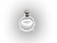 |
| potential dexterity | shiny | 4s | +Dx potential maximum | [7] |
|
| potential learning | thick | 4s | +Le potential maximum | [7] |
|
| potential mana | light | 4s | +Ma potential maximum | does not recharge wands [7] | 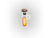 |
| potential strength | viscous | 4s | +St potential maximum | [7] |
|
| potential toughness | heavy | 4s | +To potential maximum | highly satiating (Hunger level +2000); [7] |
|
| potential willpower | speckled | 4s | +Wi potential maximum | [7] |
|
| quickling blood | opaque | 2s | +2d3/+2d2/-2 speed B/U/C | 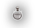 | |
| raw chaos | flickering | 2s | severely corrupts 50d5/50d10/50d30 CP's B/U/C | dipped items are exchanged; occasionally dipped items will explode, causing ~5 corruptions and 30d30 points of damage; see 0.14.4 | |
| raw mana | sparkling | 2s | alters mana regeneration rate -4d3/-2d3/+2d3 B/U/C | does not recharge wands; see 0.14.6.3; works like PoI when thrown | 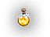 |
| sickness | light magenta | 2s | sickens | sickens monsters when thrown |
|
| strength | bubbly | 4s | +St | [7] |
|
| stun recovery | icky | 2s | a joke, potions can't be drunk when stunned | removes stunned status from monsters when thrown |
|
| toughness | sandy | 4s | +To | highly satiating (Hunger level +2000) [7] |
|
| training | light yellow | 2s | increases advancement rank (dice modifier) of a random skill, by 2/1/-1 B/U/C |
| |
| troll blood | blood red | 2s | alters natural regeneration for non-trolls: -4d3/-2d3/+2d3 B/U/C | see 0.14.6.3 |
|
| ultra healing | rainbow-hued | 2s | restores HP (max 333 HP if blessed), cures sickness (100% chance only if blessed) | blessed potion permanently increases max HP 1-3 points when drunk |
|
| uselessness | violet | 2s | no effect, but still satiates | artifact gift granted when thrown on D: 49; absolutely nothing happens when thrown otherwise |
|
| visibility | smelly | 4s | removes invisibility (10d9/10d6/10d3 turns B/U/C) | when thrown at an invisible monster, the monster becomes visible | |
| water | watery | 4s | tastes like muddy water (unholy), plain water (uncursed), fresh and clean water (holy - blesses the PC) | uncursed clears scrolls and rusts iron; dip items in holy water to bless them [3], unholy water to curse them; always "watery potion" | 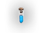 |
| willpower | pink | 4s | +Wi | [7] |
|
| wonder | shimmering | 2s | grants or increases knowledge of a random spell (equal distribution) – +3d6/+3d6/-3d6 castings B/U/C [5] | confuses monsters when thrown | 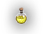 |
| youth | milky | 4s | reverses unnatural aging, -3d8 years if blessed; cursed increases age |
| |
| self-mutilation | bloody | 3s | damage to PC | damages monsters when thrown, cursed does most damage |
|
| bottle of antediluvian dwarven mead | yellow | 5s | greatly increases drunkenness | giving one to Yggaz makes him a companion can't be wished for | 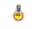 |
| bottle of antediluvian elven wine | emerald | 3s |
|
[1] Add 3 to the average if potion if blessed, subtract 3 if cursed.
[2] Blessed potion drunks for about 60 turns, uncursed 35, cursed 10 turns. While drunk, the PC gets about -3 DV, -5 Speed, -1 to hit, and +2 to melee damage. Cursed potion also blinds for short time.
[3] Throw holy water to damage undead for 6d6, this also raises alignment.
[4] Throw at rust monsters to permanently remove their rusting capability.
[5] Cursed grants 1 casting if no previous knowledge.
[6] So it is possible to have for example "rusty rustproof orcish spear".
[7] See 0.6.1.5.
Most potions increase hunger level by 100 when drunk, exceptions are:
Blessed potions give +25% more satiation, cursed -50%, +10% if Wolf birthsign, -95% savegame cheating.
All potions are made of glass. When used in melee or as a missile, potions deal (+0,1d2) damage in addition to their normal effect. They are destroyed after such attack.
Stuff can be dipped into potions – section 0.14.11.
| Name | UnID'd name | Weight | Special | Damage | Tile |
|---|---|---|---|---|---|
| +potion of literacy | sulphuric potion | 2s | grants Literacy when drunk; blinds humanoid monsters when thrown | HM(+0,1d2) | 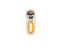 |
| +phial of Caladriel | crystal phial | 2s | uses up PPs to generate light [1]; blinds monsters when thrown (5d2 turns) except undead and constructs | HM(+0,1d2) | 
|
[1] Acts as Light spell; the radius is (PP+10)/20; cannot be quaffed.